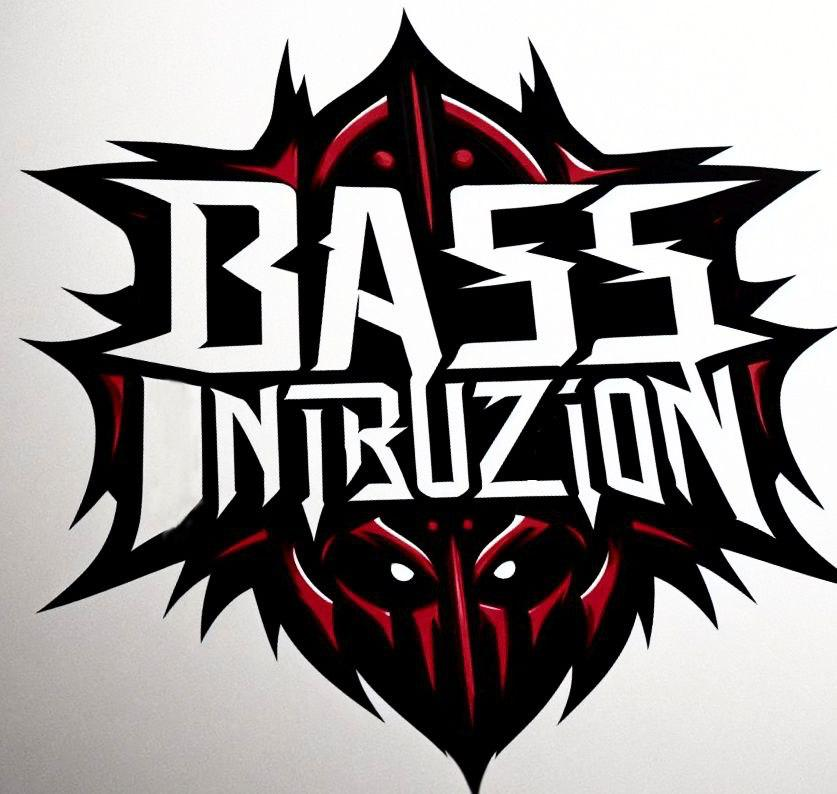

Bass Intruzion

Bass Intruzion es un proyecto musical enfocado en el hard techno, caracterizado por ritmos contundentes, atmósferas oscuras y un sonido propio que fusiona la energía industrial con elementos experimentales. Cada track busca llevar al oyente a un viaje intenso y único dentro de la escena techno más underground.